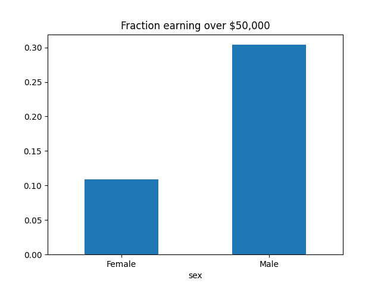

Note
Click here to download the full example code
Selection rates in census dataset¶
from fairlearn.metrics import MetricFrame, selection_rate
from fairlearn.datasets import fetch_adult
data = fetch_adult(as_frame=True)
X = data.data
y_true = (data.target == '>50K') * 1
sex = X['sex']
selection_rates = MetricFrame(selection_rate,
y_true, y_true,
sensitive_features=sex)
fig = selection_rates.by_group.plot.bar(
legend=False, rot=0,
title='Fraction earning over $50,000')
Total running time of the script: ( 0 minutes 3.285 seconds)